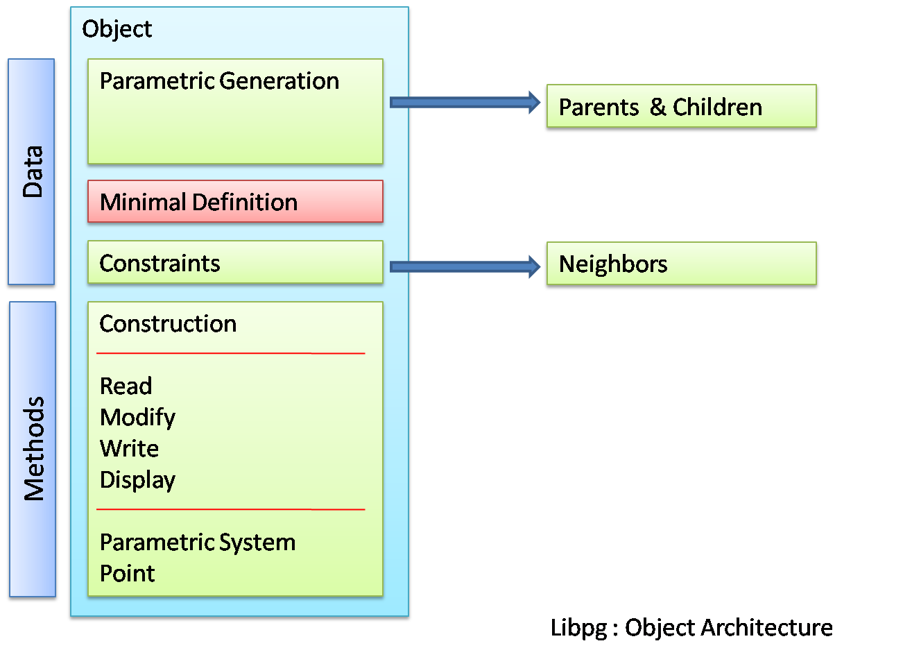

libpc: Parametrics and Constraints
Proposed sytem for parametrics and constraint implementation by Dawn Thomas (homovulgaris)
Provision for Parametrics and constraints greatly improves the performance of a Computer Aided Design System both in terms of geometry generation as well as analysis. Considering the unix model of division into multiple tools and libraries for individual functions as well as the fact that parametric/constraint functionalities are not critical elements in terms of geometry generation and raytracing, a logical solution would be the implemenation of a separate library (libpg)
Function
libpg adds the following provisions to BRL-CAD system
-
Creation & Modification of parameter-based geometry objects
-
Creation of constraints between geometry objects
-
Creation & Storage of Parametric Objects (non-geometric)
-
Modification of geometry objects in .g files to indicate parametric nature
Part 1 would include building parametric objects based on existing non-parametric geometry objects as well as generation of purely parametric geometry. libpg acts as a library which sits above librt using the librt methods for creation and modification of geometry
To efectively implement constraints, the library would first implement constraint functionality which currently exists in terms of implicit constraints ( Non negative radius, Perpendicular vectors etc. ) To see a list of implicit constraints in the various BRL-CAD primitives See A Survey of Implicit Constraints in Primitives
Constraints and CSPs
A constraint system can be looked upon as a system of variables, their associated domains and set of constraints/relationships between the variables.
Fundamentally this can be visualised using a constraint network which is a 3-tuple. Further we can have a graph based visualization of the same using vertices as variables and edges connecting vertices as constraints. It would be intuitive only for networks having binary (between two variables) or unary (with self) constraints. Otherwise, one has to visualize hypergraphs which contain hyperedges which is basically a line connecting multiple vertices for example. Also note that there could arise a situation where constraints depend on constraints ( edges connected to edges in the above discussion ) and hence such hypergraphs don’t fit neatly into the bipartite graph structure.
For a short review of Constraints, and Constraint Satisfaction Problems as well as links to resources on Constraints in general and geometrical constraints in particular, please see Constraint Satisfaction
Library architecture
LibPC is composed of two sections which are functionally implemented using 4 modules as represented in the diagram below.
The modules respectively are ( in the order of operation during a read-out solution process)
-
Reader/Import which reads from the .g file and generates C-based internal structs
-
Constraint Network Generator/ Constraint Variable System Generator which takes the above structs and produces the respective Variable and Constraint (pcVariable.h and pcConstraint.h) class objects and their graph/hypergraph representation
-
Solver which takes the above Constraint Network as an input and generates a solution / multiple solutions or in effect a Solution object
-
Geometry Updater which uses the above solution and takes care of the rest such as
-
suggest user to select a value in case of multiple solutions for narrowing down the solution range
-
update the various parameters of all associated geometry
-
write the data onto the .g file
-
Implementation Details
For effective integration with librt system as well as rest of existing brl-cad architecture, the Reader as well as Geometry Updater is entirely in C using standard datastructures. At the same time to make use of the functionality offered by various graph algorithms of boost as well as the power of object oriented programming model in constraint solution, the Constraint Network generator as well as solver is entirely coded in C++. Extensive use of Boost library is expected, in particular
-
constrained_value system : for representing implicit constraints using a predicate system
-
Boost Graph Library : for graph based representation of the constraints. Since BGL does not have support for Hypergraphs, the author plans to implement hypergraphs independently while adhering to Boost standards ( probable addition to boost itself)
-
Boos Spirit Library : for the parser based generation of constraint objects from expressions.
Spirit is an object-oriented recursive-descent parser generator framework implemented using template meta-programming techniques. Expression templates allow us to approximate the syntax of Extended Backus-Normal Form (EBNF) completely in C++. Spirit details available at boost.org
— Content below is undergoing modification —
Constraint object architecture
An object oriented method of implementation would be the creation of a mixed ( in the sense that they contain both geometric and non-geometric information ) object. The object architecture is as shown below which shows the data types as well as the public and private methods. 
Parametric Geometric Objects
From an Object Oriented point of view the major advantages is in terms of the structuring of data and in particular the system of calling methods or procedures. In effect each object knows how to evaluate equations within its space. For example a line or a curve knows ( has a method to ) calculate and return the coordinates of a point with a certain parameter value in its space ( a point at 0.6 ratio of length of the curve) With this value ( coordinates) thus returned and with the existing knowledge ( parent: curveid , parameter value:0.6 ) a parametric point object has the methods to instantiate it and store it.
Constraint Objects
The above method is efficient and useful only in the generation, modification and analysis of new geometry based on existing parametric/ non-parametric geometry. The evaluation method for constraints between already existing independent geometry would require special constraint objects. The effective difference between these objects and the earlier arises from the fact that generation of the parametric geometric objects depend on parametrics whereas constraints may or may not be feasible and thus evaluation would result in multiple solutions and they represent relationship between two independently defined elements ( parametrically or not )
Integration with librt
Two major aspects of integration with librt are
-
Database I/O
-
Declaration/ Extraction of parameters/variables from respective rt_*_internal structures
Since most of the database input-output presently is completely handled by librt, it is expedient to use the same convention for writing the new non-geometric constraint object to the database. This is achieved through the pc_constraint_export and pc_constraint_import functions which are called by such functions as wdb_export or rt_db_put_internal via a new functab entry in table.c Or in more detail the steps taken to achieve these are
-
Definition of ID_CONSTRAINT (39) in raytrace.h ( corresponding increment to ID_MAXIMUM)
-
Creation of a corresponding entry to functab array in table.c
-
Addition of pc_constraint_export,pc_constraint_import and pc_constraint_ifree functions
Regarding the declaration or extraction of parameters, the method of approach is to use a callback function rt_functab. Associated with each existing element we add a rt_*params function which is called via the functab. This would declare the list of parameters it is built on as well as the list of implicit constraints on these parameters if any ( for example in the case of an ellipse there are 4 parameters: 1 point - center, 3 vectors-a,b,c and associated constraints ). This data is stored as a pc_pc_set (ParameterConstraint Set) This way, after the implementation of libpc we can remove most of the code from existing rt*_prep functions which do such implicit constraint checking handling the same via libpc
-
Addition of rt_*_params to the RT_DECLARE_INTERFACE macro in table.c
-
Addition to the functab table in table.c
-
Definition of corresponding function is various primitives/*.c files
What should be the convention for naming the parameters ? Also there is a certain issue in the sense that some of the geometry are special cases of more generic geometry. So for a sphere we are concerned with only radius and center where as it is defined using ( point center) and 3 vectors (a b c). Should we name the parameter radius make 3 fastf_t * to a[0], b[1], and c[2] Or should we make 3 vectp_t to a,b,c or make 1 fast_t to a[0], doing a further check/constraint that a[0]=b[1]=c[2] ?*
[I think the naming convention should be as consistent as possible with the names used in the MGED user interface. For example, when a sphere is edited in MGED, the parameters available are V (the center), and 3 radius vectors (A, B, and C). Similarly, an RCC or TRC has all the parameters of a TGC. Note also that all objects in a BRL-CAD database file are accessed by unique names. A convention for producing unique names for the constraint objects is needed. Depending on how these constraint objects are accessed by a user, the names of the constraint objects might not ever need to exposed to the user. Objects in the database can be "hidden" so that they do not normally appear in listings] - JRA
The datastructures necessary for the exchange of information (pc_pc_set which itself is built using a constraint set structure and parameter set structure) are defined currently in raytrace.h (Shift to pc.h in future? )
Evaluation System
June 10th: The idea is to implement a constraint network using graph representation of boost c++ library. From the solvers point of view the constraint network would be composed of the following ( which are class definitions in pc_solver.h file)
-
Constraint Network: A Graph composed of vertices being parameters and edges being constraint relations. The difference from the normal graph is in the sense that an edge (or hyperedge ) maybe connecting more than two vertices.
-
Parameter Object: Vertex of the graph:
-
Pointers to various constraints it is connected to
-
-
Constraint Object: Edge/Hyperedge of the graph - Relation between parameters
-
Pointers to the parameters int the particular relation
-
Relation : Basic representation of the relationship
-
Relation Stack : The stack based representation of the relationship
-
-
-
The action of the Solver object/method is the production of a Solution Class A Solution is basically an instantiation of parameters along with their possible values or an instantiation of the form ( param1= value, param2=value and so on) In this case the value is basically a region of the domain the parameter could occupy.
For example consider parameter set p1,p2,p3 The solution maybe
-
(p1, 0.5-1.5; p2, 0.2) : P3 can have any value if P2 =0.2 and P1 lies in the range [0.1,1.5]
-
(p1, 1.8; p2, 0.3-0.8; p3, 0.3-0.9) : P1=1.8, and P2 lies in the range [0.3,0.8] and P3 in the range [0.3,0.9]
-
(p1, 2.3; p2, 2.2; p3, 1.4) : Unique solution P1=2.3, P2=2.2, P3=1.4
Treatment of domain of parameters
-
Option A: If a particular parameter has a domain(0.5<x<2.5) This can be viewed as the existance for two unary constraints on the parameter x ( x>0.5 and x<2.5 )
-
Option B: Utilization of a Domain class which basically is dynamic array of individual domains ( by individual domain I imply a [min,max] region )
Transfer of data from database to solver
Modus operandi:
-
Import data and create pc_pc_set using rt_*_params functions via rt_functab
-
Run a domain extractor on the constraint objects in pc_set
-
Generate the constraint network
-
Call Solver
Initial draft/intent
It would be ideal to provide both analytical and numeric evaluation methods the second one being of
primary importance in terms of constraint based calculations. Considering the standard methods of
parametrization ( see Enumeration below ) I think the implementation of an analytic solving system `
`would be easier. Though for the solution of more complex equation as well as majority of constraints,
libpg will have to provide support for numerical solutions.